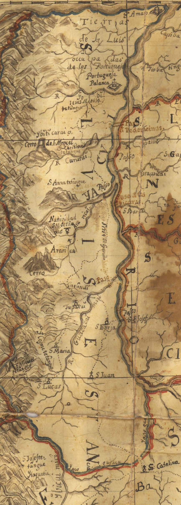

Projeto Integrador III · URI Santo Ângelo · 2026
Um brinquedo pedagógico que atravessa séculos —
da cartografia jesuítica do século XVIII à sala de aula do século XXI.
No século XVIII, geodesistas das Coroas de Espanha e Portugal percorriam as margens do Rio Uruguai armados de instrumentos matemáticos, cartas náuticas e o rigor da geometria para demarcar as terras das Missões Jesuíticas. Esses homens de ciência e fé mediram um mundo.
Quatro séculos depois, um grupo de acadêmicos da URI — Câmpus de Santo Ângelo revisitou esse legado e o transformou em um brinquedo pedagógico: O Medidor de Terras.

Terrarum S. Michaelis — Mapa missioneiro, século XVIII
As Trinta Reduções Jesuítico-Guaranis constituíram, entre os séculos XVII e XVIII, um dos mais sofisticados experimentos de organização social das Américas. Após o Tratado de Madri (1750), a disputa territorial entre Espanha e Portugal exigiu medições precisas — e foi a geometria que traçou as fronteiras.
Este projeto conecta esse patrimônio histórico ao currículo do Ensino Médio e Técnico, tornando a Matemática viva, contextualizada e significativa.
Fundação das Reduções Jesuítico-Guaranis às margens do Rio Uruguai
Tratado de Madri — geodesistas medem e demarcam as terras missioneiras com geometria e trigonometria
Guerra Guaranítica — resistência dos povos Guarani às demarcações territoriais
O Medidor de Terras nasce na URI Santo Ângelo — a Matemática das Missões chega à sala de aula
Um tabuleiro que é um mapa. Cartas que são documentos históricos.
Léguas que são a moeda do conhecimento.
Resolva problemas de geometria plana em até 60 segundos. Áreas, perímetros, figuras inscritas e coroa circular — tudo no contexto das demarcações territoriais.
Reviva momentos da história das Missões. Cada carta narra um episódio real — do Tratado de Madri às disputas entre as Coroas ibéricas.
Cartas estratégicas que representam a influência das Coroas de Espanha e Portugal. Use-as com sabedoria para virar o jogo a seu favor.
Casas de descanso e bônus. Recupere Léguas ou enfrente um Desafio Duplo com recompensa extra — assim como os viajantes que chegavam às reduções.
| Jogadores | 2 a 4 |
| Faixa etária | 12 anos ou mais |
| Duração | 50 a 60 minutos |
| Cartas | 72 (40 Desafio · 20 Evento · 12 Poder) |
| Complexidade | Média |
| Nível escolar | Ensino Médio e Técnico |
| Construção | 1 a 2 horas (imprimível) |
Os mesmos conceitos que os geodesistas usaram para medir as terras missioneiras estão nas cartas do jogo.
Áreas e perímetros de quadrado, retângulo, triângulo, trapézio e círculo
Quadrado, triângulo equilátero e hexágono inscritos em circunferências
Área entre dois raios concêntricos — como as fronteiras circulares das reduções
Seno, cosseno e tangente — os instrumentos do triângulo retângulo dos agrimensores
O professor apresenta a questão central: "Você sabia que matemáticos do século XVIII mediram as terras das Missões Jesuíticas usando geometria?" Um mapa histórico é projetado e inicia-se uma roda de conversa sobre as fórmulas que os alunos já conhecem.
⏱ 15–20 minutos
A partida completa é jogada em grupos de 2 a 4 alunos. O professor circula pelos grupos, observa estratégias, media dúvidas e pode pausar para explicar fórmulas que emergem naturalmente das cartas.
⏱ 50–60 minutos
Discussão coletiva pós-jogo, atividade de extensão com novas situações-problema e conexão com as profissões técnicas de Eletrotécnica e Mecânica. Cada aluno registra individualmente o que aprendeu.
⏱ 20–30 minutos
Resolver e elaborar problemas que envolvam cálculo de áreas e perímetros
Utilizar linguagens cartográfica, gráfica e iconográfica de forma crítica e reflexiva nas diversas práticas sociais
Todos os arquivos digitais estão disponíveis para download gratuito.
Imprima, recorte e leve as Missões para a sua sala de aula.
Mapa do percurso Rio Uruguai → São Borja. Formato A3 (ou A4 ampliado em 141%)
40 de Desafio Matemático · 20 de Evento Histórico · 12 de Poder de Coroa
A moeda do jogo — representando as unidades de medida usadas pelos geodesistas coloniais
Registro individual de Léguas de Território conquistados durante a partida
Folha de apoio para os cálculos matemáticos durante os Desafios — como os cadernos dos geodesistas
Guia completo de instruções, tipos de casa e mecânicas do jogo
Todos os arquivos digitais do jogo estão organizados no Google Drive e disponíveis para download gratuito. Inclui tabuleiro, cartas, fichas, manual de regras e ficha pedagógica completa.
Acessar e Baixar os MateriaisAcesso via Google Drive · Gratuito · Imprimível · Baixo custo
Os geodesistas do século XXI que trouxeram as Missões de volta à vida.
URI — Universidade Regional Integrada do Alto Uruguai e das Missões
Câmpus de Santo Ângelo
Programa Professor do Amanhã
Projeto Integrador III · Abril de 2026